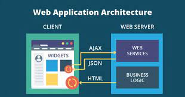
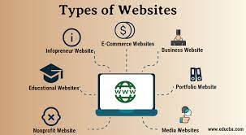
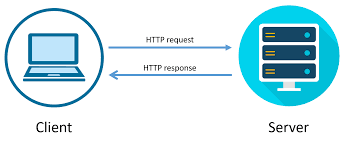
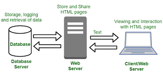
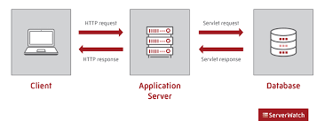

KTU MCA SYLLABUSS
Client/Server concepts

The phrases 'client/server', 'distributed computing' and 'cooperative processing' have been in use for some time, but in many ways they are open to interpretation. In fact, the principle behind client/server computing has been a fundamental part of the COBOL language since the very beginning, but today's jargon tends to mask the actual functions being performed.
Essentially, a client is a consumer of services, and a server provides services. Thus the term 'client' could be more accurately defined as 'service requester', and server as 'service provider', with the requester 'calling' the provider for the required service.
In COBOL, the CALL statement is the method used to invoke such requests, but the similarity between the standard CALL statement and client/server functionality may not always be immediately apparent.
The CALL statement is usually associated with calls to local functions (that is, CALLed programs which reside on the same machine as the CALLing program), which can be regarded as services. Thus, CALLing a date validation routine is actually requesting a validation service from a particular module.
CALLs don't necessarily have to be to local functions; they can be made to remote functions (that is, CALLed programs located on a different machine from the CALLing program). These are often referred to as 'remote procedure CALLs' or RPCs.
The client/server model extends the COBOL CALL scenario in the following ways:
Many subprograms can be grouped to provide the 'service'.
The client does not necessarily need to be aware of the actual subprograms which comprise the service.
A server can provide multiple services.
Multiple clients can request services from a single server.
The location of the server program is typically remote (that is, on a separate machine) from the requesting program.
A single client can request services from multiple servers.
Several distributed processing functions, such as presentation logic (screen handling), business logic (data processing) and data access (file/database manipulation), logically suggest themselves as candidates for the client/server model. Middleware (communications/transaction processing) is then needed to connect these distributed functions.
Micro Focus provides products and technologies to address all of the client/server application development and deployment areas listed above.
Components of Web Application

Web application architecture comes with two types of web application architecture: Structural components, and user interface app components.
Structural Components:
As the name suggests, these components make the structure of the application. These components include the client or web browser, database server, and web app server which are directly responsible for functions deciding the user interactions within the application. In the majority of cases, JavaScript, CSS, and HTML are used to create these components. However, it all varies with the web app developer.
User Interface Components:
The other one is the user interface components that contribute to the visual interface of the app. However, unlike structural components, that do not interact with the architecture, but are limited to displaying the web page. These components include a dashboard, widget, settings, notifications, and many other visual elements that help in making the user experience better. In other words, these components are directly responsible for the UX or the web app.
Types of Web Content

Expert web content development produces pages that your audience will find helpful, informative, unique, and entertaining. Done right, it encourages visitors to stay longer on a site to explore and learn more or to bookmark pages to return to again later.
In addition, original and high-quality text-based content that is optimized for SEO can help your site rank well in web searches, helping customers and prospects find you.
Here are 7 types of high-quality web content that can please website visitors and keep them coming back for more.
1. Blogs
Blogging is an invaluable tool for driving visitors to your website, and building awareness about you and your brand.
Generally written from a more personal and informal point of view than content assets, a blog is a great way to connect with readers. It is the perfect vehicle for providing them with information that not only answers a question or solves a problem, but also helps to establish you as a trusted authority on the topic.
Blogs are also a great way to keep your web content fresh, enabling you to post new content on a regular basis and helping you continue to rank in SERPs (search results).
2. Content assets
This broad category of web content includes collateral and similar resources you have already invested in and can now repurpose to help draw visitors to your website.
Some examples are product brochures, user manuals, slide presentations, white papers, industry reports, case studies, fact sheets, ebooks, webinars, and podcasts.
The goal is to extend the value of these assets by using them across different digital media and channels. The content can be broken up into smaller pieces and distributed in new ways, such as via blog posts, tweets, video clips, email blasts, search engine ads, and other channels.
3. Calls to action
A call to action (CTA) is a prompt designed to get your website visitor to take some immediate action, such as make a purchase or get more information.
In addition to having CTAs on your web pages, you can include them in other marketing content you use to drive traffic to your website, such as blogs, emails, social media posts, and e-newsletters.
Whatever your CTA is, it is important that the intent is clear and your audience has a good idea what to expect. After all, you don’t want lose visitors by having them click on a link that takes them somewhere they really don’t want to go.
4. Landing pages
Landing pages are destinations — the web pages where visitors are sent when they click on a hyperlink, such as a search engine result, a social media ad, a CTA, or a special offer on your website.
These pages are designed to help you convert website visitors into leads by providing a way to capture their contact information.
For example, suppose you want to build your authority as an SME by offering a free white paper to your website visitors. When they click on the offer link, it can take them to a landing page where the content of white paper is described in more detail and they can download the paper by submitting an email address.
5. Testimonials
One of the best ways to appeal to prospects and build credibility is with relatable success stories from their peers. That is what makes customer testimonials such valuable web content.
Whether your goal is to create formal case studies, include real-life customer scenarios in a white paper, or post short video clips on Twitter or Facebook, having a process in place to identify happy customers and capture their feedback is a great idea.
TIP: Don’t hide all your valuable customer feedback on one testimonials page. Include testimonials throughout your site to serve as social proof that validates your claims.
6. Video & audio content
With the ability to embed video and audio clips so that anyone can view and listen without leaving the webpage, digitally recorded media are increasingly popular web content tools. It is a great way to offer content such as how-tos, webinars, podcasts, and seminars.
7. Visual content
According to the Social Science Research Network, 65% of people are visual learners. So, it makes good sense to incorporate visual web content into your website.
Overview of HTTP - HTTP request – response

The Hypertext Transfer Protocol (HTTP) is an application-level protocol with the lightness and speed necessary for distributed, collaborative, hypermedia information systems. It is a generic, stateless, object-oriented protocol which can be used for many tasks, such as name servers and distributed object management systems, through extension of its request methods (commands). A feature of HTTP is the typing of data representation, allowing systems to be built independently of the data being transferred.
The HTTP is based on a request/response paradigm. A client establishes a connection with a server and sends a request to the server in the form of a request method, URL, and protocol version, followed by a MIME-like message containing request modifiers, client information, and possible body content. The server responds with a status line, including the message's protocol version and a success or error code, followed by a MIME-like message containing server information, entity maintain information, and possible body content.
WebNMS supports the development of HTTP agents which confirms to HTTP 1.0 and HTTP 1.1 version.
Generation of dynamic web pages

CGI --> A specification for writing programs that enables transactions between a Web server and other programs on a server
PHP --> Scripting language that runs in the Linux operating system; used to extract and present data from a database
Servlet --> Small application that runs on an Internet server, typically written in Java or Perl
ASP --> Microsoft's version of dynamic Web page generation; uses VBScript as the default scripting language
JSP --> Sun's implementation for creating Web pages that display dynamically-generated content
Client-server applications are groups of distributed programs running on networked computers, and interacting over known communication protocols. Rather than performing all the processing on a single system and transmitting formatted results to VT-100 terminals, client-server applications distribute processing between dedicated server and client machines. This architecture was facilitated by the proliferation of personal computers, whose additional processing power allowed some of the complex processing to be offloaded from servers down to the clients.
Application Servers

Application Server is a type of server designed to install, operate, and host applications. In the early days of application servers, there was a huge growth in the number of applications brought to the Internet. Those applications became bigger and bigger with the demand for adding more and more functionalities to the application and become more complex to run and maintain. There was a need for some kind of program on the network while it will share application capabilities in an efficient and organized manner.
An application server is a program that resides on the server-side, and it’s a server programmer providing business logic behind any application. This server can be a part of the network or the distributed network.
Now, if we would like to know the purpose of a server program, it goes this way:
Ideally, server programs are used to provide their services to the client program that either resides on the same machine or lies on a network.
Web Security
Web security is a broad category of security solutions that protect your users, devices, and wider network against internet-based cyberattacks—malware, phishing, and more—that can lead to breaches and data loss. It reduces the security risk to your organization when your users accidentally access malicious files and websites through some combination of firewall inspection, intrusion prevention system (IPS) scanning, sandboxing, URL filtering, and various other security and access controls.
The massive importance of the internet for modern enterprises—and the accompanying growth in the sophistication, frequency, and impact of cyberattacks—has made web security critical to business continuity. It’s your first line of defense against threats that can lead to the exposure of sensitive data, costly ransoms, reputational harm, compliance violations, and a host of other consequences.
Once the domain of mostly small-time hackers, internet-borne threats have evolved into a massive black market business that touches the worlds of organized crime as well as state-sponsored espionage and sabotage. Some of the latest threats are incredibly sophisticated, able to easily fool the untrained eye or bypass legacy security. Plus, with an array of ready-made tools, exploit kits, JavaScript modules, and even fully developed campaigns for sale, even a novice actor can easily launch an attack.
Cybersecurity Ventures estimates that, by 2025, global cybercrime will cost cost US$10.5 trillion annually—a greater profit than the entire world’s major illicit drug trade—and half the world’s data will live in the cloud. Given what’s at stake, it’s easy to see why effective web security is so important today.
Go Up